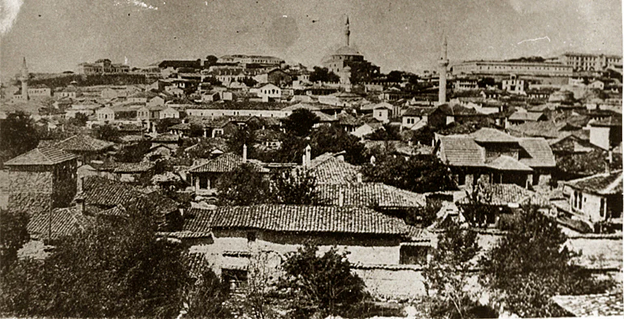
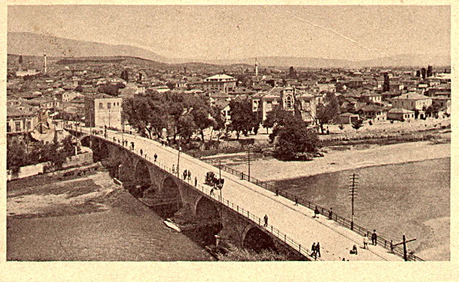
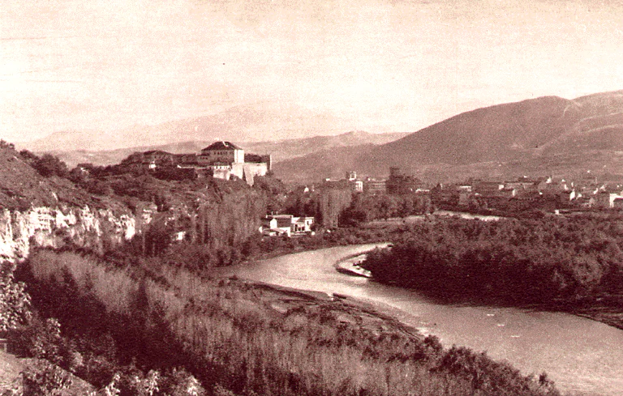
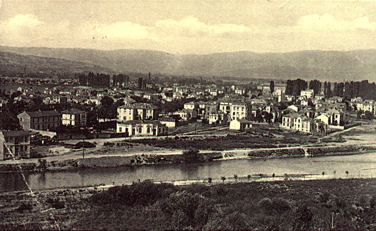

Shkupi 1916 - 1917 panorama 2
Dokumente nga Luftërat Ballkanike
- Viti
- 1916-1917
- Kohëzgjatja
- 00:12

Shkupi nga fundi i shekullit XIX. Pamje e hapësirave të pandërtuara të lagjes së re në bregun e djathtë të Vardarit. Në sfond duket kalaja e qytetit. Djathtas është kodra Gazi Baba.

Fundi i shekullit XIX. Hapësirat e pandërtuara në bregun e djathtë të Vardarit, me vetëm pak shtëpi përgjatë lumit. Në sfond ngrihet Kalaja e Shkupit.

Shkupi në vitin 1888, fotografuar nga kodra Gazi Baba drejt Kalasë së Shkupit.

Pamje e qytetit nga Kulla e Sahatit drejt pjesës veriore të Shkupit me lagjet e vjetra turke e maqedonase. Në sfond është kodra Gazi Baba. (fundi i shekullit XIX)

Shkupi - pamje e pjesës së vjetër me çarshinë e vjetër. Në sfond duket Xhamia e Mustafa Pashës, dhe djathtas saj Kalaja e Shkupit me kazermat. Në plan të parë duken shtëpi në lagjen Gazi Baba - fundi i shekullit XIX.

Shkupi, fillimi i shekullit XX. Pamje nga Kulla e Sahatit e qendrës së vjetër publike, tregtare e zejtare me çarshinë. Forma të reja arkitektonike në strukturën e vjetër urbane. Në sfond dominojnë Xhamia e Mustafa Pashës dhe kalaja e qytetit me kazermat. Poshtë saj është Xhamia e Pasha Jigit Beut, xhamia më e vjetër në Shkup (sot nuk ekziston).

Pamje nga Kalaja e Shkupit drejt malit Vodno. Menjëherë poshtë Kalasë është lagjja hebreje. Duken Vardari dhe Ura e Gurit, e pranë saj Xhamia Burmali
- fillimi i shekullit XX.

Pamje nga Kalaja e Shkupit drejt malit Vodno. Menjëherë poshtë Kalasë është lagjja hebreje. Duken Vardari dhe Ura e Gurit, e pranë saj Xhamia Burmali
- fillimi i shekullit XX.

Pamje e lagjes hebreje dhe e qytetit nga Kalaja e Shkupit. Në plan të parë është sinagoga (pa çati). Djathtas është Ura e Gurit - fillimi i shekullit XX.

Pamje nga Kalaja e Shkupit drejt Urës së Gurit dhe Xhamisë Burmali. Kjo fotografi tregon sa pak ishte shtrirë qyteti në bregun e djathtë të Vardarit. U bë nga fundi i shekullit XIX. Larg në sfond duket fabrika e birrës, ose "Birarija" siç e quanin atëherë. Në plan të parë është një pjesë e lagjes hebreje.

Pamje panoramike e zonës qendrore të qytetit në fund të shekullit XIX. Në mes është teatri turk. Në bregun e djathtë të Vardarit, pranë Urës së Gurit, duket Xhamia Burmali.

Fotografia është bërë nga muret e Kalasë së Shkupit, para Luftës së Parë Botërore. Në rrëzë janë shtëpi të lagjes hebreje, shkolla dhe sinagoga. Majtas është kisha Shën Dimitri.

Fotografi panoramike nga Kalaja e Shkupit në fillim të shekullit XX. Përpara janë disa ushtarë nga kazerma. Në rrëzë duken shtëpi të lagjes hebreje dhe Pajko, pastaj Ura e Gurit, e pranë saj Xhamia Burmali. Më tej vazhdon pjesa e re e Shkupit, dhe në largësi skicohet fabrika e birrës.

Pamje nga Kalaja e Shkupit drejt maleve Vodno dhe Kitka. Në mes të fotografisë duket Ura e Gurit, dhe pranë saj Xhamia Burmali.

Shkupi gjatë Luftës së Parë Botërore. Fotografia tregon një kamp të ushtrisë serbe pranë kishës Shën Spasi, kambanorja e së cilës duket në sfond.

Panoramë e Shkupit - vitet 1920. Në rrëzë është lagjja hebreje me shkollën dhe sinagogën. Duket ndërtimi i Teatrit Kombëtar.

Fotografi panoramike e Shkupit (rreth vitit 1920). Interesant është të shihet mali Vodno: i zhveshur, ndryshe nga sot, kur është plot pyje të mrekullueshëm. Pyllëzimi u bë pas Luftës së Dytë Botërore, me aksione të organizuara rinore. Në plan të parë është lagjja hebreje me sinagogën dhe shkollën hebreje.

Pamje e qytetit të Shkupit nga Kalaja e Shkupit. Në plan të parë është lagjja hebreje me sinagogën, shkollën dhe Teatrin Kombëtar. Në të majtë të fotografisë duken Ura e Gurit dhe Shtëpia e Oficerëve në ndërtim - vitet 1920.

Shkupi, vitet 1920. Pamje nga Kalaja e Shkupit mbi lagjen hebreje.

Fotografi panoramike e Shkupit nga Gazi Baba drejt Kalasë së Shkupit. (fillimi i shekullit XX)

Xhamia e Mustafa Pashës në sfond, dhe poshtë saj, pjesërisht, Xhamia e Pasha Jigit Beut, xhamia më e vjetër në Shkup. (sot nuk ekziston)

Pamje e Shkupit nga Gazi Baba. Në plan të parë janë shtëpitë e dendura të lagjeve të banimit. Në sfond janë Xhamia e Mustafa Pashës dhe kazermat ushtarake në pjesën jugore e veriore të kalasë së qytetit.

Pamje e pjesës së vjetër të qytetit në bregun e majtë të Vardarit. Në plan të parë janë shtëpi private. Në mes është kompleksi i çarshisë së vjetër të Shkupit. Në pjesën e pasme dominon Xhamia e Mustafa Pashës, e prapa saj janë burgu i qytetit dhe kazermat në Kala. Poshtë Xhamisë së Mustafa Pashës është Xhamia e Pasha Jigit Beut, xhamia më e vjetër në Shkup (sot nuk ekziston). (vitet 1920)

Panoramë e strukturës së vjetër urbane të qytetit, e ndryshuar nga procesi i evropianizimit dhe ndërtimi i objekteve me tipare klasike, eklektike e të tjera stilistike. Fotografuar nga Kulla e Sahatit drejt Xhamisë së Mustafa Pashës. Djathtas duket Kalaja e Shkupit me kazermat - vitet 1920.

Çairi - pjesë e vjetër e qytetit (komuna e sotme Çair). Në plan të parë është Xhamia e Gazi Isa Beut, dhe në sfond Xhamia e Jahja Pashës. - rreth vitit 1920

Panoramë e Shkupit - bregu i majtë me lagjen Çair dhe një pjesë të Gazi Babës. Në plan të parë është Xhamia e Gazi Isa Beut, dhe në sfond Xhamia e Jahja Pashës. (vitet 1920)

Kulla e Sahatit - ndërtuar më 1566-72. Në sfond janë Xhamia e Gazi Isa Beut dhe Xhamia e Jahja Pashës - vitet 1920.

Panoramë e pjesës së vjetër të qytetit, drejt Gazi Babës. Pamje nga Kalaja e Shkupit. Krejt djathtas është Xhamia e Sulltan Muratit, majtas saj Kulla e Sahatit. Në të njëjtën vijë majtas duket Xhamia e Gazi Isa Beut - vitet 1920.

Pamje panoramike e zonës qendrore të qytetit. - vitet 1920.

Peizazh dimëror i zonës qendrore të qytetit. Në plan të parë janë ndërtesa të ngritura kaotikisht, në vendin e të cilave më vonë u ndërtua Banka Kombëtare. Tarraca në një pjesë të ndërtesës është kinema verore: dy shtyllat në fund mbajnë ekranin, ndërsa në hapësirën bosh rreshtoheshin karriget për shikuesit. Lart majtas duket Kalaja e Shkupit. (vitet 1920)

Fotografi ajrore e pjesës qendrore të qytetit (rreth vitit 1928), ku dominojnë Shtëpia e Oficerëve, Ura e Gurit, Teatri Kombëtar dhe lagjja hebreje. Më lart në rrjedhën e Vardarit duket ura prej druri që të çon te Teatri Kombëtar. Lart djathtas është një pjesë e Kalasë. Në plan të parë është një pjesë e lagjes së re. Bërë verës, sepse lumi është tërhequr shumë.

Fotografi ajrore e pjesës qendrore të qytetit (rreth vitit 1928), ku dominojnë Shtëpia e Oficerëve, Ura e Gurit, Teatri Kombëtar dhe lagjja hebreje. Më lart në rrjedhën e Vardarit duket ura prej druri që të çon te Teatri Kombëtar. Lart djathtas është një pjesë e Kalasë. Në plan të parë është një pjesë e lagjes së re. Bërë verës, sepse lumi është tërhequr shumë.

Fotografi panoramike ajrore e Shkupit, kryesisht e bregut të djathtë të Vardarit, ku dominon Shtëpia e Oficerëve. Djathtas është Pallati i Ristićit. Para tij është sheshi, në mes të të cilit duket gjelbërimi i rregulluar. Vërehen edhe karrocat me kuaj, për të cilat sheshi ishte stacioni kryesor. Ura e Gurit lidh të dy brigjet. Poshtë djathtas duket Teatri Kombëtar, një ndërtesë e mrekullueshme për të cilën ende mallëngjehen shumë shkupjanë të vjetër.

Fotografi panoramike e pjesës së majtë të qytetit me Urën e Gurit dhe lagjet: majtas lagjja hebreje, djathtas lagjja Pajko. Djathtas urës është monumenti i të rënëve në Luftërat Ballkanike, që ndodhej para Bankës Osmane. Në sfond duken pjesë xhamish, Kulla e Sahatit dhe lagjet Çair e Gazi Baba. (vitet 1920)

Fotografi panoramike e Shkupit: keji i majtë i Vardarit me një pjesë të lagjes hebreje, lagjen Pajko dhe Urën e Gurit. (vitet 1920)

Pamje e Urës së Gurit nga kulla e Shtëpisë së Oficerëve. Pranë urës, djathtas, ishte ambulanca e dentistit Dr. Ruben, e pak më djathtas Banka Osmane. Midis tyre ishte një shesh i vogël me stacion karrocash me kuaj, dhe në mes të tij monumenti i luftëtarëve të rënë - rreth vitit 1927.

Pamje e Urës së Gurit nga kulla e Shtëpisë së Oficerëve. Pranë urës, djathtas, ishin ambulanca e dentistit Dr. Ruben dhe banka bujqësore. Djathtas është Banka Osmane. Midis tyre ishte një shesh i vogël me stacion karrocash me kuaj, dhe në mes të tij monumenti i të rënëve në Luftërat Ballkanike - rreth vitit 1927.

Pamje e Urës së Gurit nga kulla e Shtëpisë së Oficerëve. Pranë urës, djathtas, ishte ambulanca e dentistit Dr. Ruben, e pak më djathtas Banka Osmane. Midis tyre ishte një shesh i vogël me stacion karrocash me kuaj, dhe në mes të tij monumenti i luftëtarëve të rënë - rreth vitit 1927.

Pamje drejt Urës së Gurit mbi Vardar dhe një pjese të bregut të majtë, lagjes Pajko, fotografuar nga kulla e Shtëpisë së Oficerëve. Pranë urës, djathtas, ishte ambulanca e dentistit Dr. Ruben. Djathtas është Banka Osmane. Midis tyre ishte një shesh i vogël me stacion karrocash me kuaj, dhe në mes të tij monumenti i të rënëve në Luftërat Ballkanike - rreth vitit 1927.

Fotografi panoramike - pamje e Urës së Gurit, me Kalanë e Shkupit në sfond dhe lagjen hebreje - vitet 1920.
.

Shkupi pas vitit 1930. Majtas është Banka Kombëtare, djathtas Shtëpia e Oficerëve. Në plan të parë janë një pjesë e minares së Xhamisë Ibni Pajko dhe ndërtesa e dentistit Dr. Ruben. Në sheshin e vogël ishte një furrë me simitin më të shijshëm në Shkup dhe një stacion karrocash me kuaj.

Pamje e Vardarit me Kalanë e Shkupit, me qytetin në të djathtë. Duken Shtëpia e Oficerëve dhe Banka Kombëtare. - vitet 1930

Fotografi e mrekullueshme e qytetit dhe rrjedhës së Vardarit. Majtas është Kalaja e Shkupit. Në qendër duken Shtëpia e Oficerëve dhe Banka Kombëtare. Djathtas është mali Vodno, dhe në largësi skicat e malit Kitka. - vitet 1930

Pamje e mrekullueshme e rrjedhës së Vardarit me malin Vodno dhe lagjen Bunjakovec. Duken Shtëpia e Oficerëve dhe Banka Kombëtare. (vitet 1930)

Pamje e lagjes Bunjakovec - vitet 1930, me një pjesë të parkut të qytetit në të djathtë të fotografisë.

Pjesë e lagjes së re Bunjakovec në vitet 1920. Duken ndërtesa dykatëshe me arkitekturë modeste.

Pamje e lagjes Bunjakovec, vitet 1930.

Pamje e lagjes Bunjakovec, sot pjesë e zonës qendrore të qytetit. Duken radhë ndërtesash banimi të ndërtuara me plan, sipas zgjidhjes urbanistike për lagjen Bunjakovec.

Peizazh i mrekullueshëm panoramik dimëror, fotografuar nga Kalaja e Shkupit drejt malit Vodno. Në pjesën e mesme djathtas duken Shtëpia e Oficerëve dhe Oda Ekonomike-Tregtare.

Pamje e Urës së Gurit mbi Vardar. Në anën tjetër të lumit: majtas Banka Kombëtare, djathtas Shtëpia e Oficerëve.

Panoramë e Shkupit - fotografuar nga Kalaja e Shkupit. Dominojnë dy ndërtesa: djathtas Shtëpia e Oficerëve, majtas Banka Kombëtare. Në plan të parë është lagjja hebreje. (vitet 1930)

Fotografi ajrore e pjesës qendrore të qytetit, me sheshin, Shtëpinë e Oficerëve dhe Bankën Kombëtare. Më lart duken Teatri Kombëtar dhe ura e vogël prej druri.

Fotografi ajrore e qytetit, që përfshin sheshin me Shtëpinë e Oficerëve, Bankën Kombëtare, Odën Ekonomike, lagjet hebreje dhe Pajko, dhe Urën e Gurit. Lart majtas duket e gjithë kalaja e qytetit me kazermën. Pranë saj është Xhamia e Mustafa Pashës, dhe në sfond skicohet Xhamia e Jahja Pashës.

Fotografi ajrore e kishës katedrale Shën Mëria në Shkup, ndërtuar më 1835 (në qendër, me kambanore të lartë), dhe e kishës Shën Mina e vitit 1902 (majtas, me dy kambanore). Përreth është lagjja Pajko.

Shkupi, vitet 1930. Pjesa e vjetër e qytetit. Pamje përmes një dritareje me hekura të një ndërtese të vjetër turke.

Panoramë e qytetit. Krejt majtas është Xhamia e Sulltan Muratit, djathtas saj Kulla e Sahatit. Krejt djathtas është Xhamia e Gazi Isa Beut. Në sfond duken Banka Kombëtare dhe Shtëpia e Oficerëve, prapa tyre ngrihet mali Vodno. (vitet 1930)

Panoramë e qytetit. Në sfond është Xhamia e Sulltan Muratit, djathtas saj Kulla e Sahatit. Krejt djathtas është Xhamia e Gazi Isa Beut. Në sfond duken Banka Kombëtare dhe Shtëpia e Oficerëve. (vitet 1930)

Fotografi ajrore e qytetit. Poshtë duken Ura e Gurit dhe Shtëpia e Oficerëve. Më lart në rrjedhë është ura e vogël prej druri që të çon te Teatri Kombëtar dhe lagjja hebreje. Lart është Kalaja e Shkupit me kazermën. Xhiruar më 26 qershor 1933 në orën 10 të mëngjesit.

Hapësirë e zbrazët e pandërtuar para Muzeut të sotëm të Qytetit të Shkupit. Majtas duken hotelet "Bristol" dhe "Srpski Kralj" në rrugën kryesore që të çon te sheshi. Në të njëjtën rrugë, në qendër të fotografisë, duket Pallati Kranga. (vitet 1930)

Fotografi ajrore e sheshit. Në plan të parë është Banka Kombëtare nga ana e pasme, dhe djathtas saj Oda Ekonomike-Tregtare. Përballë Bankës Kombëtare ndodhet Shtëpia e Oficerëve. Djathtas duken Vardari dhe një pjesë e Urës së Gurit. Më lart në rrjedhë është ura prej druri që të çonte te Teatri Kombëtar, që duket edhe në këndin e sipërm djathtas të fotografisë.

Dokumente nga Luftërat Ballkanike
 Ujësjellësi4 kartolina
Ujësjellësi4 kartolina Kalaja30 kartolina
Kalaja30 kartolina Urat60 kartolina
Urat60 kartolina Kej58 kartolina
Kej58 kartolina Sheshi46 kartolina
Sheshi46 kartolina Ndërtesat66 kartolina
Ndërtesat66 kartolina Kishat e krishtera19 kartolina
Kishat e krishtera19 kartolina Objektet myslimane33 kartolina
Objektet myslimane33 kartolina Shtëpia e Oficerëve29 kartolina
Shtëpia e Oficerëve29 kartolina Teatri28 kartolina
Teatri28 kartolina Stacioni hekurudhor13 kartolina
Stacioni hekurudhor13 kartolina Shkollat36 kartolina
Shkollat36 kartolina Parqet12 kartolina
Parqet12 kartolina Tregjet18 kartolina
Tregjet18 kartolina Rrugët38 kartolina
Rrugët38 kartolina Panorama I60 kartolina
Panorama I60 kartolina Panorama II30 kartolina
Panorama II30 kartolina Kolazhe55 kartolina
Kolazhe55 kartolina Përmbytjet9 kartolina
Përmbytjet9 kartolina Tërmeti27 kartolina
Tërmeti27 kartolina Shkupi 200026 kartolina
Shkupi 200026 kartolina